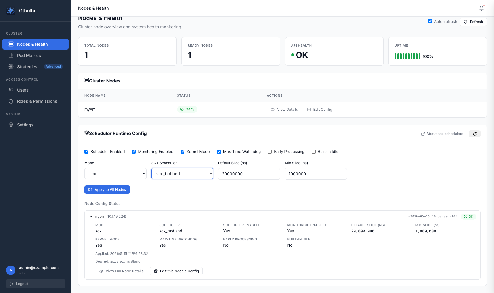

透過 Web GUI 載入 sched_ext 排程器
Gthulhu v1.2.0 在 Nodes & Health 頁面新增 Scheduler Runtime Config 面板。您可以透過 Web GUI 在執行時期啟用或停用排程功能，並載入 Linux sched_ext 內建排程器，例如 scx_rustland，不需要重新部署整個叢集。
本頁說明如何使用 Web GUI 檢視節點健康狀態、套用排程器執行時期設定，以及確認每個節點是否已接受目標配置。
先決條件
| 元件 | 需求 |
|---|---|
| Linux 核心 | 6.12+ 且啟用 CONFIG_SCHED_CLASS_EXT=y |
| Gthulhu Manager | 正在執行，且 Web GUI 可以連線 |
| Gthulhu Scheduler | 已部署到每個目標節點，通常以 DaemonSet 執行 |
| sched_ext 排程器 | 所選排程器必須存在於 scheduler 執行環境中 |
若您使用 Kubernetes，請先轉發 manager service：
接著開啟 http://localhost:8080 並登入。
開啟 Runtime Config 面板
- 在側邊欄中開啟 Nodes & Health。
- 檢查頁面上方的摘要卡片：
- Total Nodes：Gthulhu 已知的節點總數。
- Ready Nodes：目前回報 Ready 狀態的節點數。
- API Health：manager API 健康檢查結果。
- Uptime：近期健康檢查歷史。
- 在 Cluster Nodes 中，點擊 View Details 可檢視節點資訊，或點擊 Edit Config 調整該節點的排程器執行時期設定。
- 使用 Scheduler Runtime Config 卡片將共用設定套用到所有節點，或檢視每個節點的套用狀態。
About scx schedulers 連結會開啟外部文件，說明不同 sched_ext 排程器的特性與適用情境。
執行時期設定欄位

Scheduler Runtime Config 卡片提供以下設定：
| 欄位 | 說明 |
|---|---|
| Scheduler Enabled | 啟用目標節點上的 scheduler runtime。停用後將停止套用自訂排程行為。 |
| Monitoring Enabled | 保持執行時期指標與節點狀態回報。 |
| Kernel Mode | 當所選排程器支援時，允許使用 kernel-side sched_ext 執行路徑。 |
| Max-Time Watchdog | 啟用 watchdog，避免排程器停滯或執行時間過長影響系統。 |
| Early Processing | 當所選排程器支援時，提前處理排程事件。 |
| Built-in Idle | 使用排程器內建的 idle 處理路徑。 |
| Mode | 選擇執行時期模式。若要載入 sched_ext 排程器，請使用 scx。 |
| Default Slice (ns) | 預設 CPU time slice，單位為奈秒。 |
| Min Slice (ns) | 最小 CPU time slice，單位為奈秒。 |
Runtime Modes
| 模式 | 說明 |
|---|---|
none |
停用自訂排程器載入，讓節點維持預設行為。 |
gthulhu |
使用 Gthulhu 以 policy 驅動的排程路徑。 |
simple |
使用簡化排程模式，適合輕量測試或 fallback 情境。 |
scx |
透過 runtime loader 載入內建 sched_ext 排程器，例如 scx_rustland。 |
當您希望 Gthulhu 將排程委派給可用的 sched_ext 排程器，同時仍透過 Gthulhu manager 監控節點狀態時，請使用 scx 模式。
套用排程器到所有節點
若要將相同的執行時期設定套用到整個叢集：
- 開啟 Nodes & Health。
- 在 Scheduler Runtime Config 中啟用需要的開關。
- 將 Mode 設為
scx。 - 設定 slice 數值，例如：
- Default Slice (ns)：
20000000 - Min Slice (ns)：
1000000
- Default Slice (ns)：
- 點擊 Apply to All Nodes。
- 等待 Node Config Status 列表重新整理。
當設定成功套用後，每個節點應顯示 OK badge，並顯示目標 mode/scheduler 組合，例如 scx / scx_rustland。
叢集層級變更
將 runtime configuration 套用到所有節點會改變整個叢集的排程行為。建議先在非生產節點測試所選排程器。
單節點狀態
Node Config Status 區塊可展開每個節點，查看目前已套用的執行時期設定。
| 欄位 | 說明 |
|---|---|
| Mode | 節點目前回報的 runtime mode。 |
| Scheduler | 已載入的排程器名稱，例如 scx_rustland。 |
| Scheduler Enabled | 該節點是否啟用 scheduler runtime control。 |
| Monitoring Enabled | 該節點是否回報監控資料。 |
| Default Slice (ns) | 已套用的預設 CPU time slice。 |
| Min Slice (ns) | 已套用的最小 CPU time slice。 |
| Kernel Mode | 是否啟用 kernel mode。 |
| Max-Time Watchdog | 是否啟用 watchdog。 |
| Early Processing | 是否啟用 early processing。 |
| Built-in Idle | 是否啟用 built-in idle handling。 |
| Applied | 節點接受設定的時間。 |
| Desired | manager 要求的目標 mode 與 scheduler。 |
您可以使用 View Full Node Details 檢視節點層級健康資訊，或使用 Edit this Node's Config 覆寫單一節點的設定。
建議操作流程
- 先啟用 Monitoring Enabled，並確認每個節點都回報 Ready。
- 先將
scx模式套用到單一測試節點。 - 確認 Node Config Status 顯示 OK 與預期的排程器名稱。
- 搭配 Pod Metrics 與節點健康指標觀察 workload 行為。
- 驗證完成後，再使用 Apply to All Nodes 推廣到整個叢集。
疑難排解
| 症狀 | 檢查項目 |
|---|---|
| 節點未顯示 OK | 確認 scheduler pod 正在該節點執行，且可連線到 manager API。 |
scx 模式套用失敗 |
確認核心支援 sched_ext，且所選排程器存在於 runtime 環境中。 |
| 節點停止回報狀態 | 檢查網路連線、manager logs 與 scheduler logs 中的狀態更新錯誤。 |
| workload 行為異常 | 先切回 gthulhu、simple 或 none，檢查 Pod Metrics 後再嘗試其他排程器。 |
您也可以查看目標節點上的 scheduler pod logs：